10 Virtual Memory
Basics on virtual memory are covered in Computer Organization notes
10.0.1 Base and Bound Registers
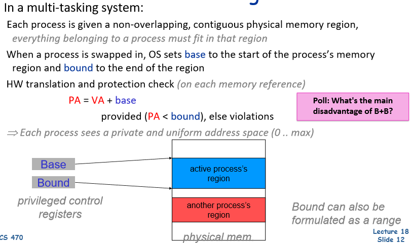
- Disadvantage:
- Have to keep the whole process’s region in memory at the same time
- Process’ memory has to be contiguous in physical memory
- A big problem if a program uses a signficant amount of memory
10.0.2 Segmented Address Space
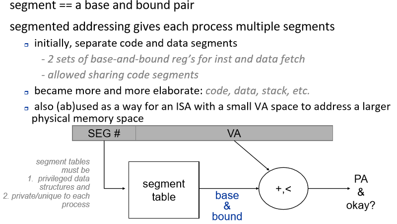
- Run into segmentation problems: we can get wasted chunks of memory in between processes’ address space, where the wasted chunks may be too small for new segments to fit in (wasteful)
10.0.3 Paged Address Space
- Paged address space fixes segmentation problem by having non-contiguous fixed size pages
- No wasted space in between “segments” as a process’s memory doesn’t have to sit together (contiguously) in physical memory
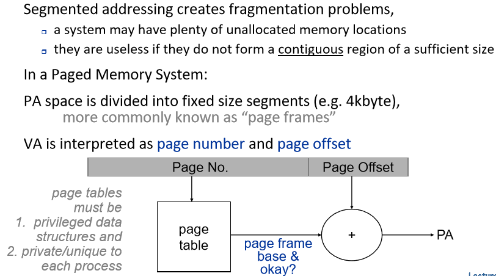
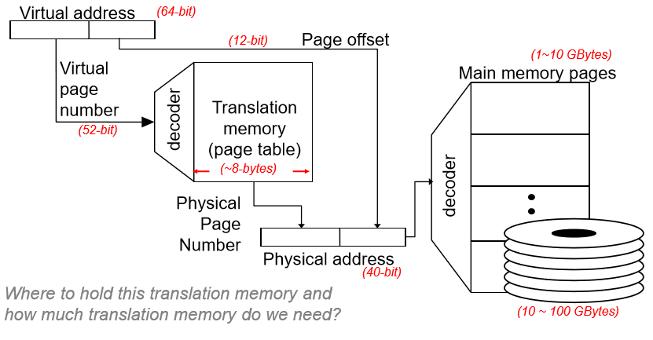
10.1 Page Table Organization
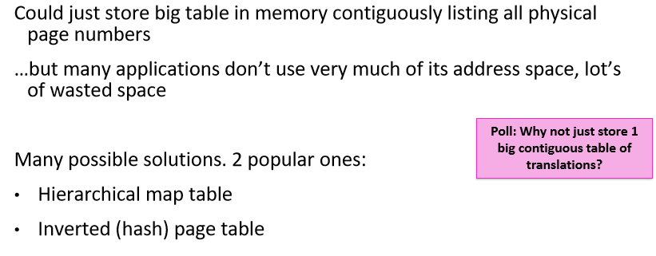
- 1 big page table too large even for small programs
- most programs don’t use that much memory, wasting a lot of space
10.2 Hierarchical Page Table
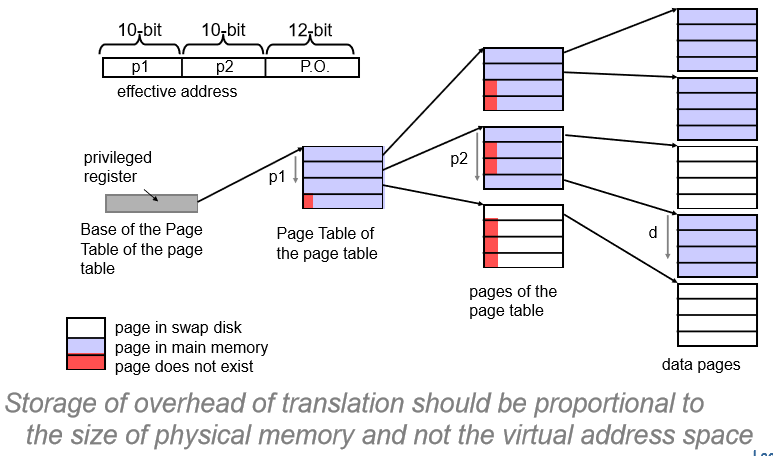
10.3 Inverted or Hashed Page Table
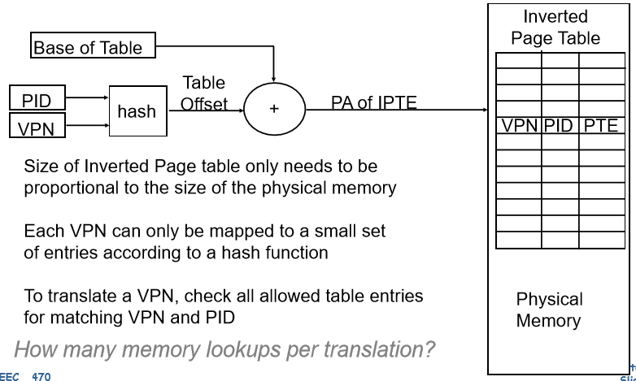
10.4 Virtual-to-Physical Translation
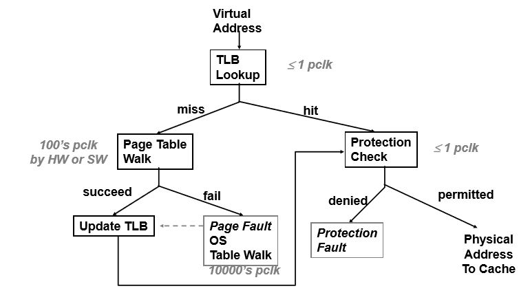
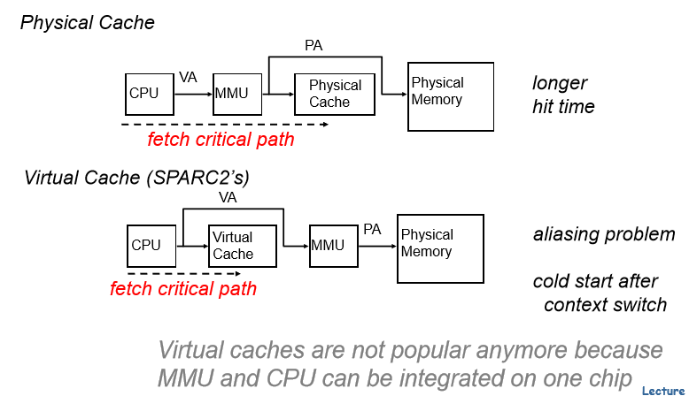
10.4.1 Translation Look-aside Buffer
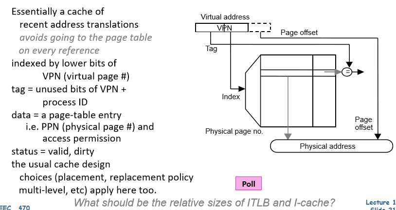
10.4.2 Virtually Indexed Virtually Tagged (VIVT) Cache
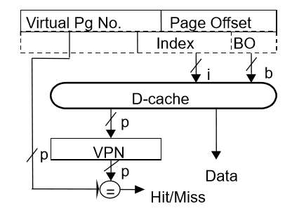
- Use the whole virtual address
- Send entire virtual addr to D-cache, giving us the data
- Only do translation of physical addr. on a miss
- Pros:
- Fast - access cache right away
- Simple
- Cons:
- Homonyms (one virtual address could map to several different physical addreses, eg multiple threads using the same address)
- Flush cache after context switch or need to add address space ID to cache
- Synonyms (one physical address maps to multiple virtual addresses)
- We may want multiple contexts to share some section of memory (shared memory)
- Need to flush cache on context switch
- Homonyms (one virtual address could map to several different physical addreses, eg multiple threads using the same address)
10.4.3 Physicall Indexed Physically Tagged (PIPT) Cache
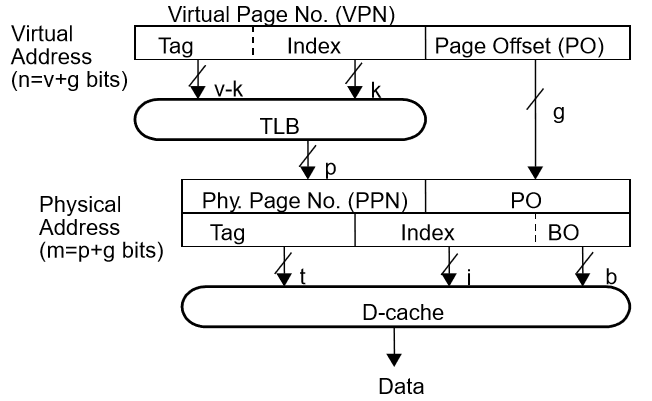
- Does translation before accessing the D-cache
- Do translation with TLB
- Avoids homonym and synonym
- Pros:
- Simple
- No aliasing
- Cons
- Slow (memory translation is added to critical path)
10.4.4 Virtually Indexed Physically Tagged (VIPT) Cache
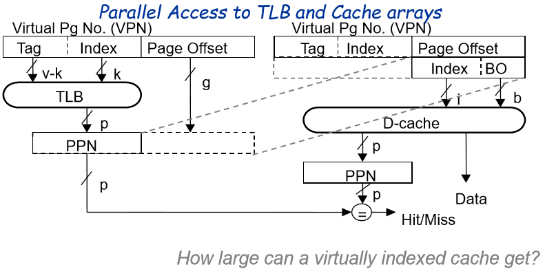
- In parallel, access cache and do translation
- Access the data cache using only the page offset
- Since page offset doesn’t get translated, only the virtual page number gets translated into a physical page number
- Index into the cache using page offset, at the same time translate the virtual page number into a physical page number
- Caveats:
- This limits how large the cache can be
- If cache gets too large, then the index (page offset bits) into the cache gets much larger, index might start bleeding into virtual page number
- Need to ensure index into the cache is contained entirely in the page offset
- This limits how large the cache can be
- Pros:
- Fast (two memory transactiosn done in parallel)
- Cons
- More complicated
- Cache size is constrained (bad)
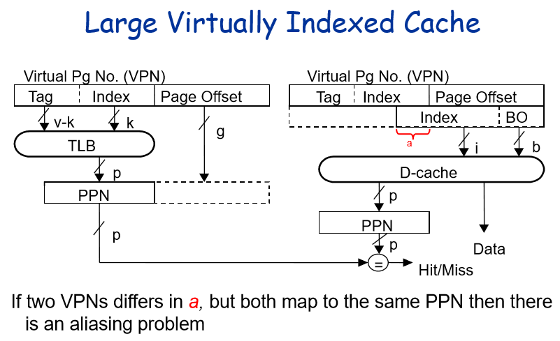
10.4.5 Virtual Address Synonyms
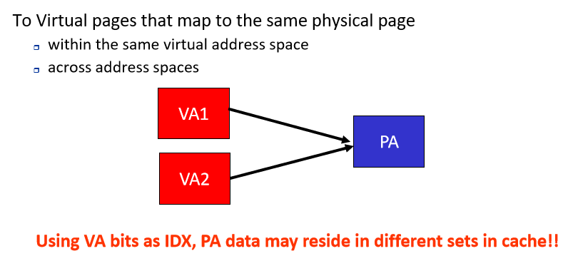
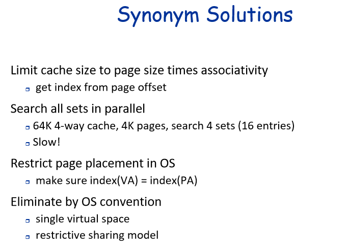